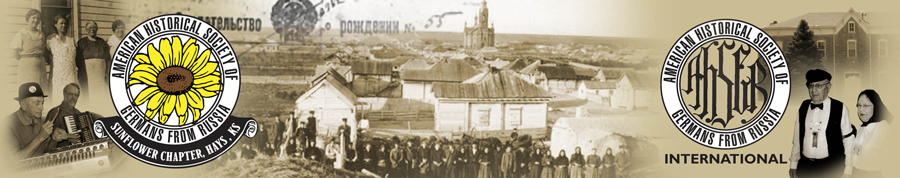

☰ menu
Volga German Grammar
The grammar and lexicon of the Volga German dialect has been described in Kiel (2004) and Johnson (1994), and readers are invited to consult these sources for a systematic overview. What follows below is an exemplification of dialect features which have been encountered in the present project. We use Standard German as a reference point for comparison.
-
The use of 'wo' as a relativizer with human referents:
Die leite
wo auf dem bilt sein danken dir fir das.
'The people who are in the picture thank you for this.'
-
Lowering and unrounding of the nucleus in the diphthong eu:
eir (euer), Freinde, neies (neues), leite (Leute),
-
Voicing:
Voicing occurs in a number of positions:
- final: mid, daz
- initial: drost (Trost), drefen (trefen), daucent (tausend), dauten (tauten)
- medial: zweidens
-
The use of sein as a finite copula:
wir sein noch gesund
'we are still healthy'
-
Fronting of central vowels:
kende (koente), schen (schoen), efterst (oefterst)
-
Deletion of final [e] in third person singular pretetit
Die Arme
dreht sich um und um und ging den traurigen Gang zu ihren kleinen Kinderlein und
weinet fuer Hungersnot.
-
Simplificaiton of alveolar clusters in participle inflections
geheirat, gearbeit (cf. Standard German geheirtatet, gearbeitet).
Marianna kam gegangen, Schnee weiss war sie
bekleid , Ihre Harren waren abgeschmitten,
References
- Johnson, Chris D. 1994. The Volga German dialect of Schoenchen, Kansas. PhD Diss. Lawrence, KS: University of Kansas dissertation.
- Keel, William D. 2004. Unsere Leute: the Volga Germans of West Central Kansas: aspects of their history, politics, culture and language. Lawrence KS: Max Kade Center for German-American Studies; Volga German Society: Hays, KS.